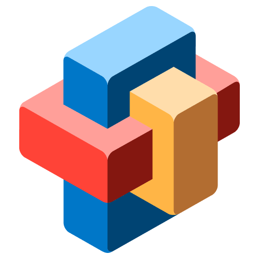

Solve for Tomorrow Brasil chega à 13ª edição

O programa
Saiba maisO Solve for Tomorrow é um programa global de cidadania corporativa da Samsung, com coordenação geral do Cenpec no Brasil. Ele convida professores e estudantes do ensino médio de escolas públicas a criar projetos que resolvam problemas reais da sua comunidade, e a participação é gratuita.
A 13ª edição
Lançada em 23 de abril de 2026, a edição teve as inscrições prorrogadas até 13 de julho. Neste ano o programa passou a ter 30 semifinalistas, dez a mais que na edição anterior, e registrou crescimento de 7,7% no número de projetos inscritos em relação a 2025.
Próximos passos
A Samsung já anunciou os 30 semifinalistas e, depois, os 10 projetos finalistas. O resultado dos vencedores da 13ª edição está previsto para 8 de dezembro.